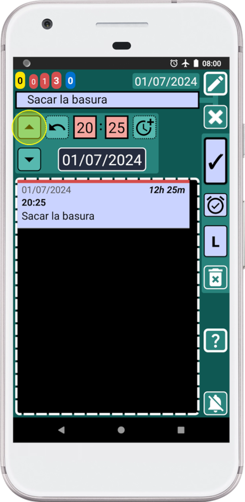

Con SECURElogBook puedes programar tareas fácilmente, rápido y con perfección, porque tiene funciones dedicadas para hacer exactamente eso.
Primero, necesito explicarte algunos conceptos que permiten a la aplicación hacer eso y más. Recuerda que SECURElogBook no es una simple lista de tareas pendientes. Es una herramienta flexible que te ayuda a recordar todo y gestionar tu tiempo. Pero también, gracias al sistema de búsqueda, te permite aprender de los datos que creas para mejorar cada día.
Para explicar las funciones que permiten a SECURElogBook mover tareas sin problemas en segundos, veamos este ejemplo donde estamos editando el registro "Pasado - No completado":

La pequeña lista de registros (C) mostrará solo los registros que coinciden o siguen el momento seleccionado por fecha y hora del registro que estamos editando (A). Por eso, cuando editamos un registro, el primer registro en la lista siempre será el que estamos editando (B).
Ahora, imaginemos que tenemos estos registros, la lista en la ventana principal (azul) muestra todos los registros:
Para crear o editar registros, usamos otras ventanas. Verde azulada para editar y verde para crear registros:

Cuando creas o editas un registro, la lista en esas ventanas se actualiza cada vez que cambias la fecha o la hora. La lista mostrará solo los registros que coinciden o siguen el momento seleccionado por esa fecha y hora:
SECURElogBook no permite tener dos registros al mismo tiempo (usa una lista para tener dos o más registros al mismo tiempo). Si la hora para el registro que estás creando o editando ya está siendo utilizada por otro registro, los botones del registro se pondrán rojos:
Los botones del registro se vuelven rojos para advertirte que esta hora ya está siendo ocupada por otro registro. No podrás guardar o copiar ese registro si los botones del registro están rojos. El registro que te impide guardar o copiar será el primero en la lista (puedes mover el registro que está bloqueando a una horara diferente o puedes elegir otro hora).
La otra razón para este comportamiento, donde la lista se actualiza cuando cambiamos la fecha o la hora, es filtrar los registros por hora. Puedes cambiar la hora para filtrar los registros según la hora que elijas; esto te permitirá programar tareas de manera más eficiente.
Por ejemplo, si quieres crear una tarea después de las 12:00, puedes establecer la hora a las 12:00. Esto hará que la lista muestre información solo a partir de las 12:00. Ahora te será más fácil ver dónde puedes colocar el nuevo registro:
Puedes ingresar la fecha y hora manualmente. O puedes usar los botones ARRIBA/ABAJO para seleccionar la hora de los registros existentes:
El botón ARRIBA selecciona la hora del registro anterior. El botón ABAJO selecciona la hora del siguiente registro. Estos botones copian la hora del primer registro de la lista y la añaden al registro que estás creando o editando. Luego, cuando ambos registros están en la misma hora, puedes añadir o quitar tiempo para colocar perfectamente el registro que estás creando o editando:
Estas ventanas te ayudan a sumar o restar tiempo sin posibilidad de cometer errores cuando presionas o mantienes presionado este botón , lo que te permite programar registros con precisión en segundos.
Digamos que quieres mover un registro para que esté a cierta hora antes o después de otro registro. Por ejemplo, quiero mover "Sacar la basura" 5 minutos antes de "Encontrarme con un amigo en el bar".
Y sí, puedes editar "Sacar la basura", hacer un cálculo sencillo y darte cuenta de que debes establecer el registro a las 12:15. Pero también puedes hacer lo mismo con cualquier valor de tiempo y sin cálculos mentales ni errores.
Permíteme mostrarte cómo hacerlo:
Puedes practicar este ejemplo creando 3 registros. Luego moveremos el último 5 minutos antes del primero.
1. Haz clic en el registro que deseas mover; en este caso, "Sacar la basura".
2. Como queremos mover el registro "Sacar la basura" hacia arriba, debemos presionar el botón ARRIBA :

Esto establecerá nuestro registro con la hora del registro anterior:
Observa que no podemos guardar/copiar (porque los botones del registro están en rojo) porque la hora que establecimos para nuestro registro a las 16:25 ya está siendo utilizada por otro registro, el primero en la lista.
3. Presiona el botón ARRIBA :
Ahora, el registro que estamos editando, "Sacar la basura", y el registro que vamos a usar como referencia, "Encontrarme con un amigo en el bar", están configurados a la misma hora, 12:20.
Ahora podemos añadir o quitar cualquier valor de tiempo para crear exactamente el espacio que queremos entre esos registros.
4. Mantén presionado el botón e introduce "-5" minutos:
Ahora nuestro registro se establece automáticamente 5 minutos antes del siguiente registro:
5. Para guardar el registro y volver atrás, presiona el botón indicado con la flecha amarilla (imagen de arriba).
6. Presiona el botón de retroceso en tu teléfono para volver a la ventana principal:
Como podemos ver, hemos movido el registro con precisión completa, rápidamente, sin cálculos mentales ni errores. Ahora el espacio de tiempo entre los registros es de 5 minutos, y podemos verlo gracias a las funciones inteligentes de SECURElogBook.
Con este conocimiento, tendrás un control completo sobre el tiempo. S√≠, este superpoder solo puede controlar tu tiempo, pero es mucho más de lo que la mayor√≠a de las personas que no usan SECURElogBook tienen. üòâ